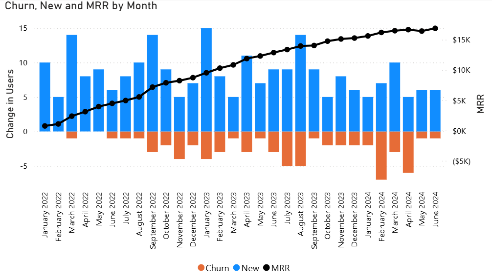

Monthly Recurring Revenue (MRR)
Description
Monthly Recurring Revenue (MRR) is the predictable, recurring revenue generated by customers on a monthly basis. MRR is a key metric for subscription-based businesses and is used to evaluate revenue consistency and growth momentum over time.
MRR = Sum of monthly subscription fees from all active customers
Visual Example

DAX Formula
MRR =
VAR CurrentMonthStart =
MIN('Date'[Date])
VAR CurrentMonthEnd =
EOMONTH(CurrentMonthStart, 0)
RETURN
CALCULATE (
SUM(Subscriptions[MonthlyFee]),
FILTER (
Subscriptions,
Subscriptions[StartDate] <= CurrentMonthEnd &&
(
ISBLANK(Subscriptions[EndDate]) || Subscriptions[EndDate] >= CurrentMonthStart
)
)
) Usage Notes
- MRR is calculated by identifying subscriptions active during each calendar month based on StartDate and EndDate ranges.
- "New Customers" counts unique customers who began a subscription during the selected month.
- "Cancelled Customers" counts customers whose subscriptions ended during the selected month (only those with a non-blank EndDate).
- A Date table is required and should be unlinked from the Subscriptions table; time logic is handled via DAX filters.
- All three measures can be visualized over time using a shared date field such as Month, Month ID, or Date from the Date table.
- Segment metrics by Product, Region, or Customer Type for deeper insight into churn, acquisition, and revenue trends.
- To avoid inflating metrics, ensure subscriptions are not duplicated across months unless they are truly active.